{{user.name}}

Menú Principal
Directorio Legisladores
{{ item.who }}
Otros Sitios Borde
{{ item.who }}
Contacto
{{ item.number }} {{ item.type }}
Borde Politico
@BordePolitico
Me Gusta
 @BordePolitico
@BordePolitico
 Me Gusta
Me Gusta